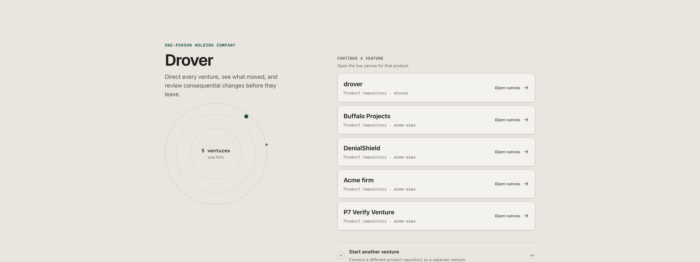
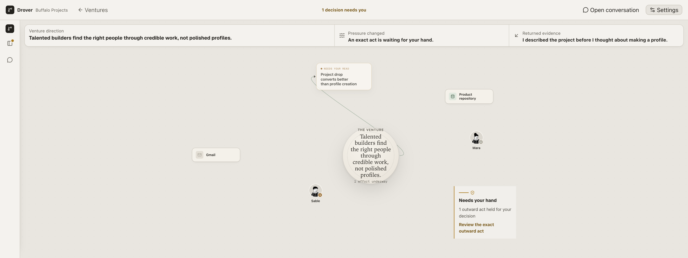

Drover · Morning briefing · 2026-07-16
The workbench is built. Come drive it.
Overnight, Drover became an Agent Development Environment: a docked shell around the venture canvas, with the conversation as the handle you steer by. Drover is a desktop workbench for a solo founder running a one-person holding company — you direct each venture in plain words and a permanent AI crew does the work while you watch, review, and decide. This briefing tells you what you can now do, exactly how to try it, what shipped in code, the judgment calls made without you, and the few things that are honestly not done. Every claim below is marked either validated — proven by a passing test or a real render — or inferred, meaning the code is present and green but the specific end-to-end path was not driven in front of a screen.
The honest bottom line: the whole loop you asked for is real and it holds together. You open a venture, watch its working theory sit on the canvas, direct it in plain words, see the right teammate claim the work with a one-line reason, review by talking instead of clicking buttons, and grant standing so trusted acts stop waiting on you. The shell never clips, the six-noun language is clean everywhere it was checked, and the app reopens where you left it.
What is proven on screen is the room and its resting state: the docked shell, the atlas, the effort inspector, the waiting-act gate, the collapsing rail, and the entry surface. What is present and green but not yet watched end-to-end is the live wiring behind the conversation — routing a fresh direction, a reply steering or closing an effort, a granted act skipping the wait, a real reply landing as a teammate's report. The code and its tests pass; the ten-minute tour below is how you turn the inferred half into validated by your own hand.
01 — What you can now do
The changed experience, end to end
Yesterday the canvas floated without a frame — panels overlapped, nodes collided, and internal words leaked into what you read. Today it is a workbench with three docked regions and one place to type. Here is what that buys you, in the order you'd meet it.
You direct a venture in plain words
validated · renderOpen a venture and its working theory is already on the canvas — the product truth at the center, the effort underway, the crew, and the tools it can reach. A composer is docked to the stage; you type an ordinary direction like "help this venture grow." No plan to approve, no form. The resting shell, the centered venture truth, and the docked composer are proven in the renders below. Not yet watched: a brand-new theory materializing node by node from a fresh direction.
Work gets claimed, visibly, with a reason
inferred · code greenA direction is routed to the teammate whose lens fits it, and the claim appears in the conversation with a one-line why before the work starts — a buyer-flavored direction goes to the buyer-lens teammate; a crew of one skips the model and the coordinator claims it directly. The routing module and its tests are present and pass. Not yet watched: a live claim rendering in the thread from a direction you type.
You review by talking, not by clicking
inferred · code greenWhen a draft comes back, you reply in the thread. Drover reads the reply as one of steer / approve / close / new-direction — "tighten the opening, it's too salesy" reaches the effort's next step as steering; "that's done, close it" ends the effort and it recedes to the background. No buttons were added. An ambiguous reply is treated as steer and closes nothing. Only your own message ends work — the classifier proposes, you decide. Module and tests present and green. Not yet watched: a reply visibly steering or closing an effort on screen.
You grant standing, and trusted acts stop waiting
inferred · code greenSay "you can send outreach like this yourself" and that standing is remembered. A later matching act sends without parking at the gate and tells you so — "Sending this — you told me I could." A non-matching act still waits with its exact payload shown in the inspector, and a deploy always waits regardless. The grant only skips the wait; it never mints send authority, and the wall-authority test proves a grant can't forge self-approval from the browser, API, MCP, or the model. Not yet watched: a granted act actually skipping the wait live.
Evidence attaches to its cause
inferred · code greenWhen a reply comes back from the world, it joins the exact effort that caused it and appears in the conversation as the teammate reporting it — "Buffalo replied — they asked about pricing" — linking down to the full record. An unattributed reply stays honestly unattributed, never guessed onto unrelated work. The join core and its rendering are present and green. Nothing sends outbound in this build: the real Gmail send path is guarded by host wall-release, so the join is proven with a founder-entered outcome, not a live send. Not yet watched: a reply reported in-thread on screen.
The same crew follows you across ventures
validated · merged
A new venture opens with the same four named teammates — Yara, Mira, Soren, Kai — already present,
carrying the lessons they graduated elsewhere: one face, one accumulating lens. Each venture still holds
only its own work; nothing bleeds between ventures. The crew phase (lane P8, Reading A) is now merged
into ade and verified: an acceptance test drives the real venture-create route and finds all
four present carrying their template lens, a lesson blessed in one venture reaches the others through the
template, and two rail-6 isolation guards prove no venture's raw work or soul data appears in another —
all green on the integrated tree (npm test passing: brain 633, UI 263, lint and build clean).
Still inferred, not watched: a live render of a fresh venture opening in the running app with the
seeded crew visible on the canvas — the behavior is test-proven, the on-screen moment is not yet
screenshotted.
The app reopens where you left it
inferred · code greenLaunched as a desktop app, Drover restores your last window size and position, starts and stops its engine with the window, and boots only once healthy. The browser build is now strictly a dev harness — no founder-facing "desktop required" chrome. Window-state restore, health-gated boot, and clean shutdown are wired with tests. Not yet watched: a quit-and-relaunch cycle restoring exact bounds.
Only an act that would touch the world — send, deploy, spend — waits for you, and it waits with the exact payload rendered in the inspector: the email as the recipient will see it, the diff, the amount. Everything inward proceeds without asking. This authority model is unchanged from before and its guard tests stayed green.
02 — Test it yourself
Run it, then take the ten-minute tour
Preferred: launch the real desktop app. It restores your window and runs the honest lifecycle. If the desktop build gives you any trouble, the localhost dev harness serves the identical UI.
Then walk this. It exercises every claim above in the order you'd naturally meet it.
- You land on the entry surface — "Direct every venture, see what moved, and review consequential changes before they leave." Pick Buffalo Projects and open its canvas.
- The atlas settles: the venture truth at center ("Talented builders find the right people through credible work, not polished profiles"), one effort underway, the crew, and the tools it can reach. Confirm nothing overlaps and the top band reads "1 decision needs you."
- Click the effort card. The inspector swaps in on the right — what the effort is for, who's on it, its draft, and a link to the full run record. The stage re-fits; no panel bleeds over the canvas.
- Find the waiting act ("Needs your hand — 1 outward act held for your decision"). Open it and read the exact payload in the inspector. This is the one place your hand is required.
- Open the conversation and reply to the returned draft in plain words — try "tighten the opening, it's too salesy." It should register as steering, not a button press.
- Reply "you can send outreach like this yourself" to grant standing, then confirm a later matching act says it's sending because you allowed it — while a deploy still waits.
- Collapse the rail to its icon strip and watch the canvas re-fit to the wider stage within a beat. Reopen it; it returns.
- Quit and relaunch npm run app — it should reopen to the same venture at the same window size.
No outbound send happens in this build. The real Gmail send path is held behind host wall-release, so the tour is safe to run end to end — the evidence-to-cause step is proven with a founder-entered outcome, not a live email.
What it looks like right now




03 — The commit trail
What landed, in order
The run started serial, then split into parallel lanes on your morning "run more in parallel" call, and
the lanes were merged back into ade in dependency order. This is the trail as it sits on the
branch, newest first.
Four of the five lane merges applied with no conflict, including P8 (firm-level crew), which auto-merged
cleanly — its venture-store.mjs edit sat in a different region than ade's own
change to that file. One (P6) had a single import-block conflict in market.mjs, resolved by
keeping both imports. The full suite ran green after every merge and on the final sweep after P8:
npm test passing — brain 633 tests, UI 263 tests, lint and production build clean.
04 — Judgment calls made without you
Decisions taken during the run, for your review
These are choices made to keep moving overnight. None is locked; each is here so you can overrule it.
- Card density: "standard" is the shipping default. The composite offered editorial / standard / detailed density variants. Standard ships — enough on the card to read at a glance without clutter. The other two remain available for you to judge later.
- Visual bar calibrated to your morning verdict. P1 shipped a green shell whose composition was short of target; P2 re-did the language and component pass to the accepted render you signed off on. The bar that held from there is the P2 accepted frame, not the P1 checkpoint.
- Topology: parallel lanes off the P1 checkpoint. On your "run more in parallel" call, P4·P5, P6, P8, and P9 were built in isolated worktrees and merged back in dependency order rather than as one serial chain. It held — a clean suite after each merge.
- Gmail send left behind the wall. Per the run contract, nothing outbound sends. The evidence-to-cause join is proven with a founder-entered outcome; the real send executor is present but guarded, not exercised.
- One crew across ventures = Reading A. Teammates cross ventures as graduated patterns through the template, not as literally shared memory. Literal pooling (Reading B) would violate venture isolation and was left unbuilt — it needs your explicit amendment first.
Taste-polish punch list carried forward
Small things the sweep noticed and left for a deliberate pass, not blockers:
- The waiting-act gate card and the effort card share close visual weight at rest; a hair more contrast on the amber gate would make "needs you" pop faster from across the canvas.
- The collapsed-rail direction/claim card at the bottom of the rail is dense; it earns a second look at line-height and truncation.
- Zoom-responsive card detail is live and subscribes to the real canvas transform — worth eyeballing the mid-zoom band where body copy first appears, to confirm the transition reads as intentional rather than abrupt.
05 — Honest unmet items
What is not done, stated plainly
The sweep passed with no functional or structural defect — brain 621/621, UI unit 263/263 across 59 files, lint and production build clean, and the firm browser journey green. Nothing was left red. What remains is the gap between "green and present" and "watched end-to-end," plus the items the contract deferred on purpose.
The live conversation loop is not screen-verified present · green · unwatched
Routing a fresh direction, a reply steering or closing an effort, a granted act skipping the wait, and a reply reported in-thread all have passing modules and tests, but none was driven live in front of a screen during the sweep. The ten-minute tour is how you close this gap. Treat these as inferred until you've watched them.
No real outbound send happened by design
The Gmail send executor is present but held behind host wall-release. The evidence-to-cause join is proven with a founder-entered outcome, not a live email. Wiring and exercising a real send is a future night's scope, on your say-so.
Idea-stage first run is out of scope deferred
First run ships for the repo-backed case: connect a repository, get a correctable product read-back with uncertainty labeled, and pick from concrete directions. Starting a venture from a bare description — no repo — was deferred; it needs mockup rounds before it's built.
Deferred by contract, not attempted deferred
Navigation instruments (minimap, command palette), auto-update mechanics, open-source packaging, persona prompt architecture, and literal shared cross-venture memory (Reading B, which needs an isolation-rule amendment first) were all explicitly out of scope for this run.
Evidence PNGs resolved; P8 merged on a clean tree housekeeping
Earlier in the run a handful of older evidence screenshots (orbital-atlas, venture-atlas, workyard) showed as modified in git status, which held lane P8's merge once until it was clear they were safe. Those were settled before the P8 integration: the working tree was clean when P8 merged, and the merge left it clean. P8 is now on ade and the suite is green.
In one line: the workbench and its resting states are proven on screen; the conversation wiring behind them is coded and green but waiting for you to drive it. Run npm run app, take the tour, and the inferred half of this briefing becomes validated by your own hand.